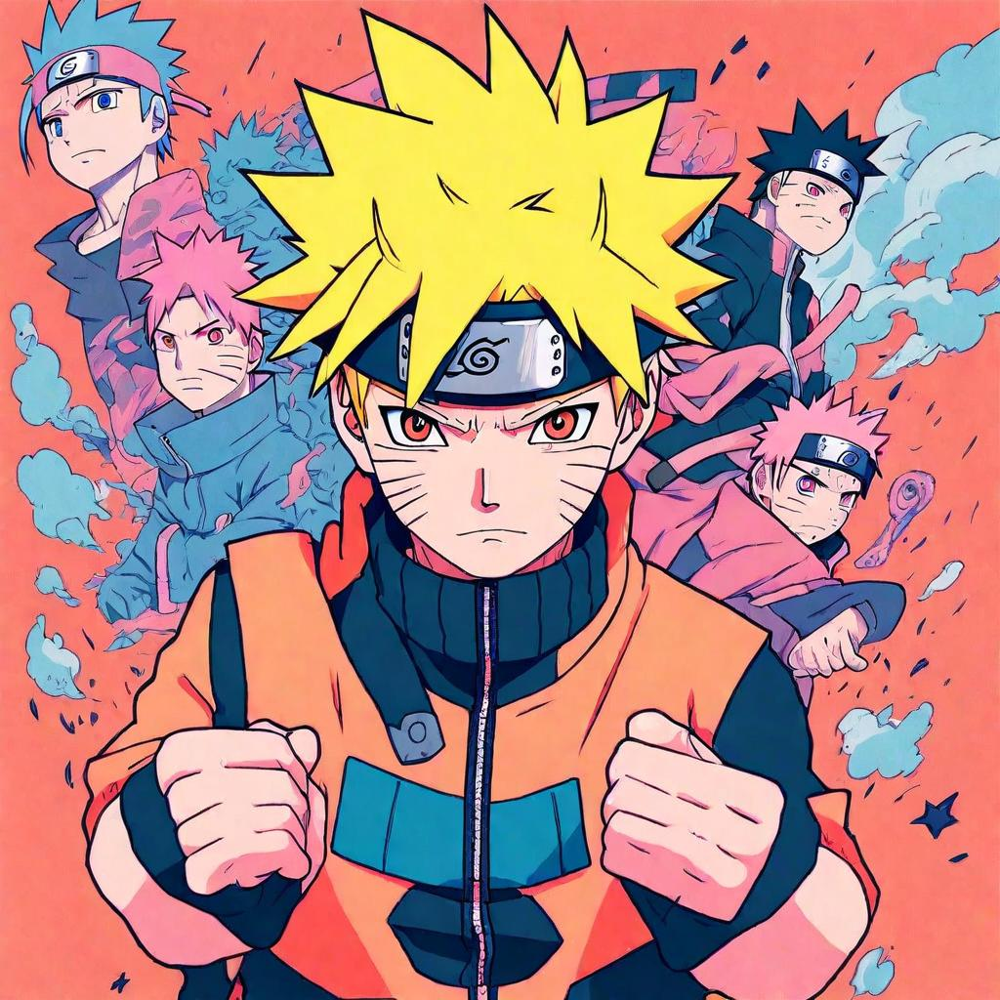

Sambomaster - Seishun Kyousoukyoku | Lyrics Meaning and Translation | Sentence for Sentence
"Seishun Kyousoukyoku" by Sambomaster is an emotionally charged and energetic song that served as the fifth opening theme for the anime series Naruto. The song's powerful melody and heartfelt lyrics capture themes of youth, struggle, and the beauty of simple emotions. Sambomaster, a Japanese rock band known for their passionate performances, brings their unique style and intensity to this track, making it a memorable anthem for fans.
In this article, we will explore the lyrics of "Seishun Kyousoukyoku" sentence by sentence, providing the original Japanese text, Romaji, and English translation. We will also delve into the deeper meaning behind each line, revealing how the song's themes resonate with the journey of the characters in Naruto.
Background of the Song
Release Details
"Seishun Kyousoukyoku" by Sambomaster was released in 2004 and served as the fifth opening theme for Naruto. The song played from episodes 104 to 128, accompanying key moments in the series and adding emotional depth to the storyline. Its intense message and powerful melody made it an instant hit among fans.
Inspiration and Creation
Sambomaster is known for their expressive lyrics and passionate performances. "Seishun Kyousoukyoku" reflects themes of youth, emotional struggles, and the desire to convey simple yet profound emotions, mirroring the challenges and growth of Naruto and his friends. The band's ability to blend raw emotion with a captivating tune has made this song a favorite among listeners.
Sentence-by-Sentence Lyrics Breakdown
Verse 1
Sentence 1:
Original Japanese:
ひからびた言葉をつないで
Romaji:
Hikarabita kotoba wo tsunaide
English Translation:
Connecting dried-up words
Meaning and Interpretation: This line sets the tone with the imagery of trying to piece together worn-out or tired expressions, symbolizing the effort to communicate despite difficulties.
Sentence 2:
Original Japanese:
それでも僕等シンプルな
Romaji:
Soredemo bokura shinpuru na
English Translation:
Even so, we simply
Meaning and Interpretation: Emphasizes the simplicity and purity of the emotions the speaker wants to convey, despite the complexity of the situation.
Sentence 3:
Original Japanese:
想いを伝えたいだけなの
Romaji:
Omoi wo tsutaetai dake na no
English Translation:
Just want to convey our feelings
Meaning and Interpretation: Highlights the desire to communicate sincere emotions, a central theme in the song.
Sentence 4:
Original Japanese:
吹き抜けるくすんだあの日の風は
Romaji:
Fukinukeru kusunda ano hi no kaze wa
English Translation:
The dull wind of that day blows through
Meaning and Interpretation: Reflects on past experiences and emotions that still linger, affecting the present.
Sentence 5:
Original Japanese:
昨日の廃虚に打ち捨てて
Romaji:
Kinou no haikyo ni uchisutete
English Translation:
Abandoning them in the ruins of yesterday
Meaning and Interpretation: Suggests leaving behind past sorrows and regrets to focus on the present and future.
Sentence 6:
Original Japanese:
君と笑う 今を生きるのだ eh
Romaji:
Kimi to warau ima wo ikiru no da eh
English Translation:
Living in the now, laughing with you, eh
Meaning and Interpretation: Emphasizes the importance of living in the moment and finding joy with loved ones.
Chorus
Sentence 1:
Original Japanese:
それでもあの出来事が
Romaji:
Soredemo ano dekigoto ga
English Translation:
Even so, those events
Meaning and Interpretation: Acknowledges that past events still have an impact and can cause pain.
Sentence 2:
Original Japanese:
君を苦しめるだろ?
Romaji:
Kimi wo kurushimeru daro?
English Translation:
Will still hurt you, right?
Meaning and Interpretation: Reflects on how past experiences continue to affect the present, causing emotional pain.
Sentence 3:
Original Japanese:
だからこそサヨナラなんだ
Romaji:
Dakara koso sayonara nanda
English Translation:
That's why it's goodbye
Meaning and Interpretation: Indicates the need to say goodbye to the past in order to move forward.
Sentence 4:
Original Japanese:
このまま何も残らずに
Romaji:
Kono mama nanimo nokorazu ni
English Translation:
Without leaving anything behind
Meaning and Interpretation: Expresses a desire to leave the past completely, without lingering regrets.
Sentence 5:
Original Japanese:
あなたと分かち合うだけ
Romaji:
Anata to wakachiau dake
English Translation:
Just sharing with you
Meaning and Interpretation: Highlights the importance of shared experiences and emotions in the present.
Verse 2
Sentence 1:
Original Japanese:
やがて僕等は
Romaji:
Yagate bokura wa
English Translation:
Eventually, we
Meaning and Interpretation: Suggests a gradual realization or change over time.
Sentence 2:
Original Japanese:
それが全てだと気がついて
Romaji:
Sore ga subete da to kigatsuite
English Translation:
Will realize that it's everything
Meaning and Interpretation: Acknowledges that the present moments and emotions are what truly matter.
Sentence 3:
Original Japanese:
悲しみは頬を伝って
Romaji:
Kanashimi wa hoho wo tsutatte
English Translation:
Sadness runs down the cheeks
Meaning and Interpretation: Describes the physical manifestation of sadness through tears.
Sentence 4:
Original Japanese:
涙の河になるだけ
Romaji:
Namida no kawa ni naru dake
English Translation:
Just becoming a river of tears
Meaning and Interpretation: Symbolizes the accumulation of sorrow and the emotional release that comes with it.
Bridge and Outro
Sentence 1:
Original Japanese:
揺れる想いは強い渦になって
Romaji:
Yureru omoi wa tsuyoi uzu ni natte
English Translation:
Wavering feelings become a strong whirlpool
Meaning and Interpretation: Describes the intensity of emotions, likening them to a powerful, swirling force.
Sentence 2:
Original Japanese:
溶け合うのよ babe
Romaji:
Tokeau no yo babe
English Translation:
They melt together, babe
Meaning and Interpretation: Illustrates the merging of emotions and experiences, creating a profound connection.
Themes and Messages
Major Themes in the Song
- Youth and Struggle: The lyrics reflect on the challenges and emotional turmoil of youth.
- Emotional Resilience: Highlights the importance of overcoming past sorrows and focusing on the present.
- Connection and Shared Experiences: Emphasizes the significance of sharing emotions and experiences with loved ones.
Resonance with Listeners
The themes of "Seishun Kyousoukyoku" resonate deeply with listeners, especially fans of Naruto, as they reflect the core values of the series. The song's powerful message and intense melody inspire hope and determination, much like Naruto himself.
Translation Accuracy and Interpretation
Challenges of Translating Japanese to English
Translating Japanese lyrics to English involves navigating nuances and cultural differences. Certain phrases and emotions may not have direct equivalents in English, requiring interpretive translation to maintain the song's original intent and impact.
Comparison with Other Translations
- Official vs. Fan Translations: Official translations often aim for accuracy and readability, while fan translations may capture more of the song's emotional and cultural context.
- Interpretation Variations: Different translations can offer various perspectives on the song's meaning, enriching the understanding of its themes.
Connection to Naruto
Fit Within the Anime
"Seishun Kyousoukyoku" is a perfect fit for Naruto, capturing the essence of Naruto's journey, filled with dreams, determination, and the struggles of a young ninja. The song's dynamic rock style matches the intense and emotional nature of the anime.
Fan Reactions
Fans of Naruto have embraced "Seishun Kyousoukyoku" as an iconic opening theme, praising its motivational lyrics and memorable melody. The song is often associated with the pivotal moments in the series, making it a beloved anthem among fans.
Conclusion
In summary, "Seishun Kyousoukyoku" by Sambomaster is a powerful and emotionally charged opening theme that perfectly encapsulates the spirit of Naruto. Its meaningful lyrics, intense melody, and connection to the series' core themes of youth, struggle, and emotional resilience make it an enduring favorite. By examining the song's lyrics sentence by sentence, we gain a deeper appreciation for its impact and the way it mirrors Naruto's journey. We invite you to share your thoughts and interpretations of "Seishun Kyous
oukyoku" in the comments, and reflect on how this iconic song has inspired you.
Comments